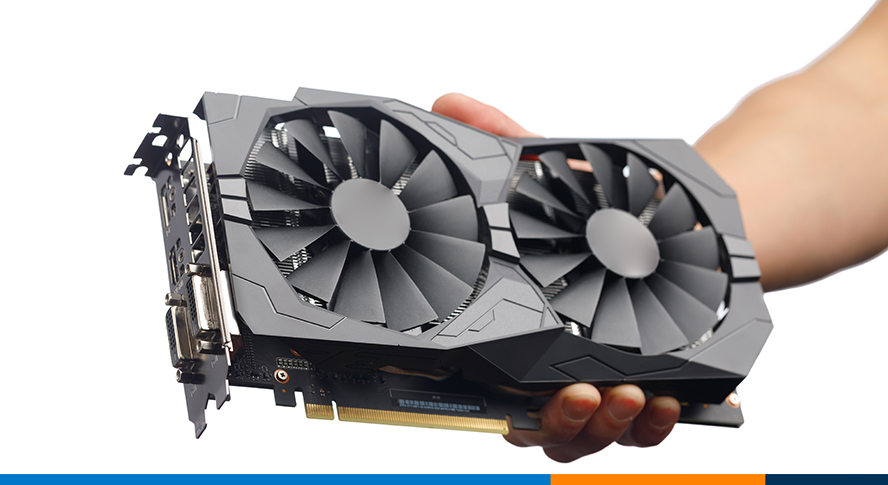

History of GPU
Explore the evolution of Graphics Processing Units from their inception in the 1980s to their current role in modern computing.
A graphics processing unit (GPU) is a specialized electronic circuit initially designed for digital image processing and to accelerate computer graphics, being present either as a discrete video card or embedded on motherboards, mobile phones, personal computers, workstations, and game consoles.
After their initial design, GPUs were found to be useful for non-graphic calculations involving embarrassingly parallel problems due to their parallel structure. Other non-graphical uses include the training of neural networks and cryptocurrency mining.